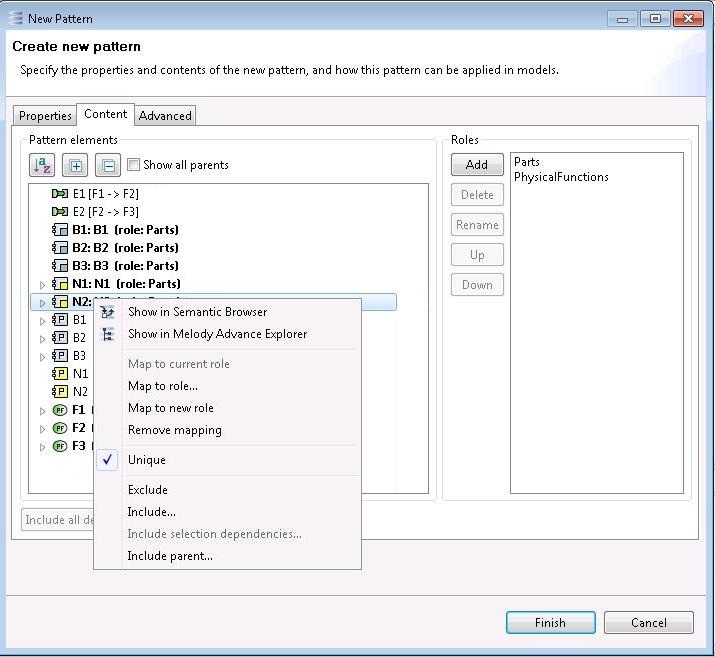

Creation Wizard Tab 2: Pattern Content
The second tab is concerned with pattern elements and their mapping to the roles of the pattern.

Note (Capella only): Notice that pattern elements’ names are prefixed with an '(xyz)_' when they are contributed by an XYZ viewpoint (i.e when they are not original Capella model elements). This prefix means that this element is from the Capella model. For Capella model elements, this prefix is not added.
Pattern elements
Roles
Multi-part patterns